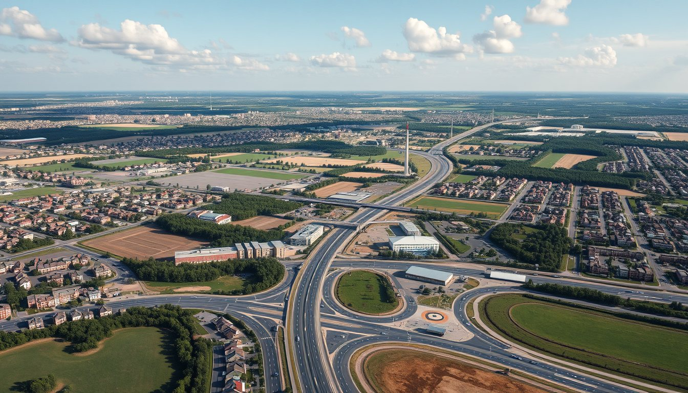
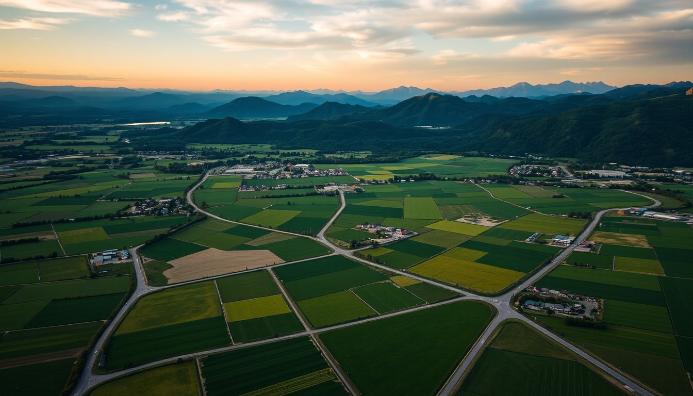
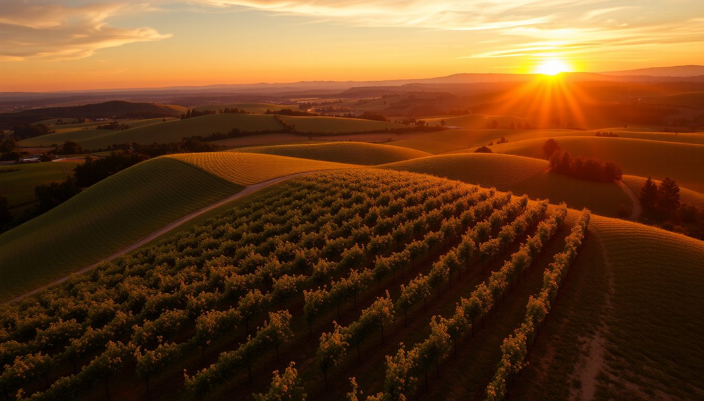
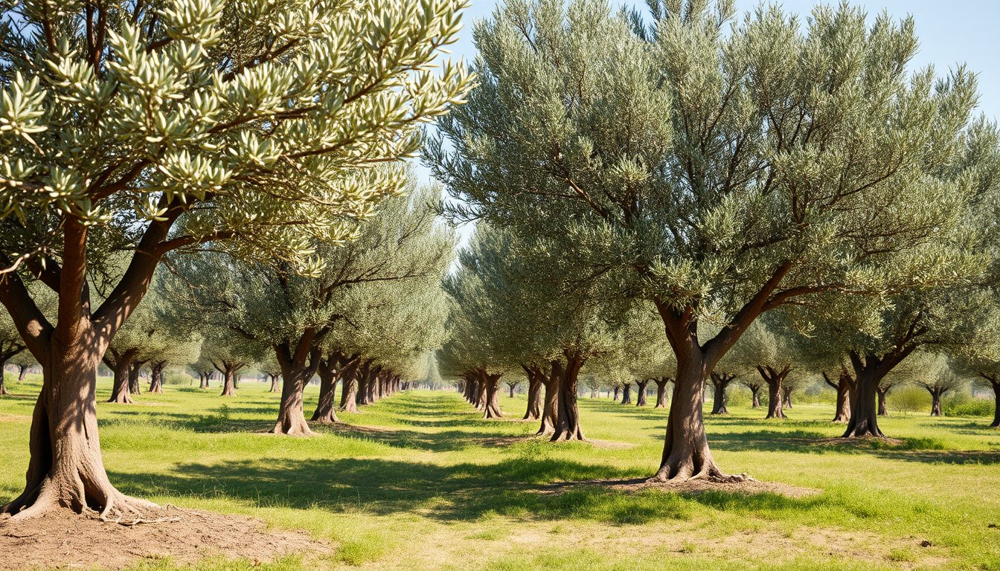
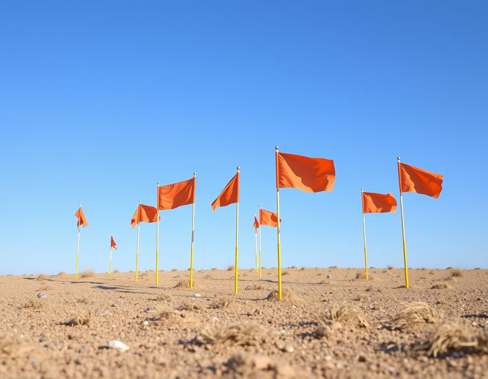
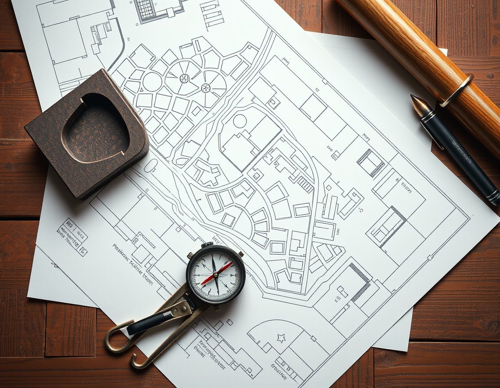

İmarlı arsaKınıklı, konut imarlı arsa
Konut · E:1.20 · Hmax 4 katAlan620 m²
Cephe22 m
TapuMüstakil
4.650.000 ₺7.500 ₺/m²

Her ilanın tapu kaydı, imar durumu ve yol cephesi tarafımızdan kontrol edilir. Koordinatları görüşmede paylaşırız.

İmarlı arsa
Bağ
Zeytinlik
Tapu harcı oranı %4'tür (genellikle alıcı ve satıcı %2'şer öder). Döner sermaye ücreti yıllık olarak güncellenir; tutar örnektir.
